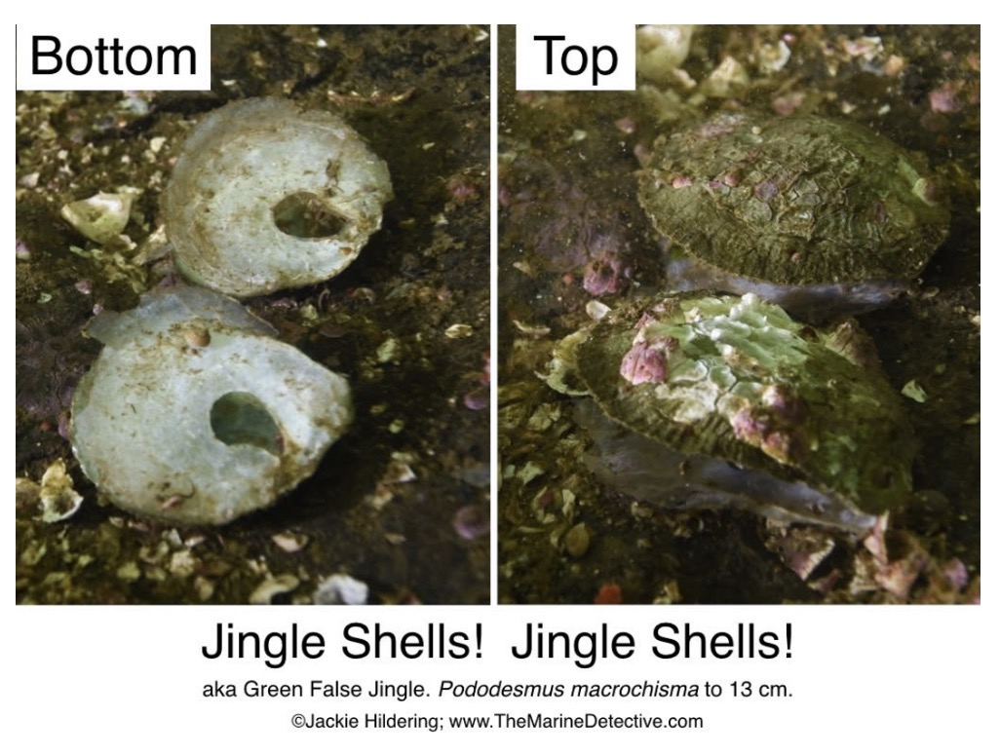
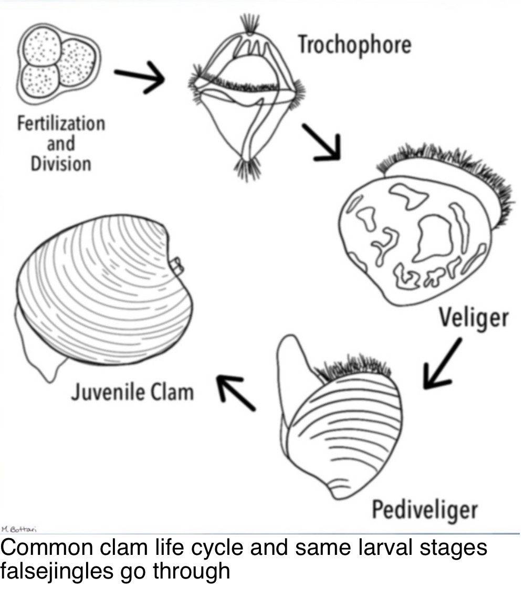
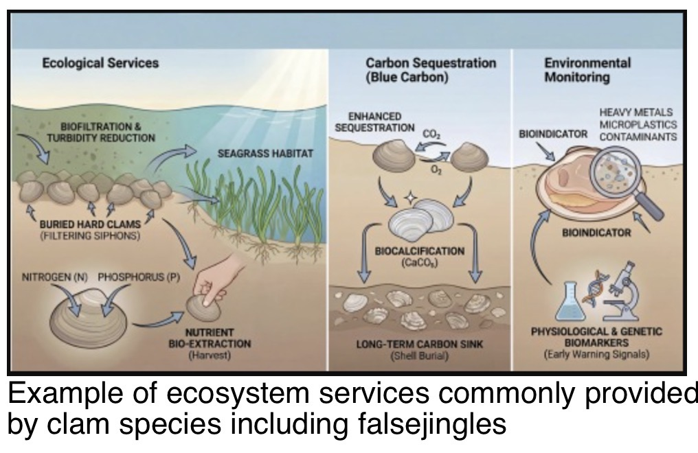
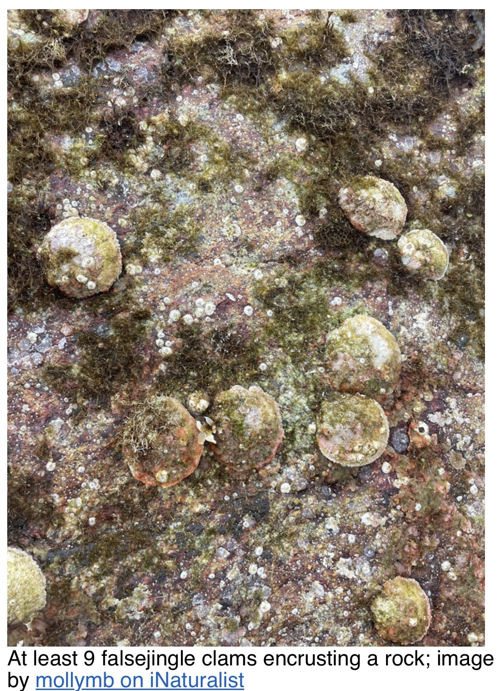
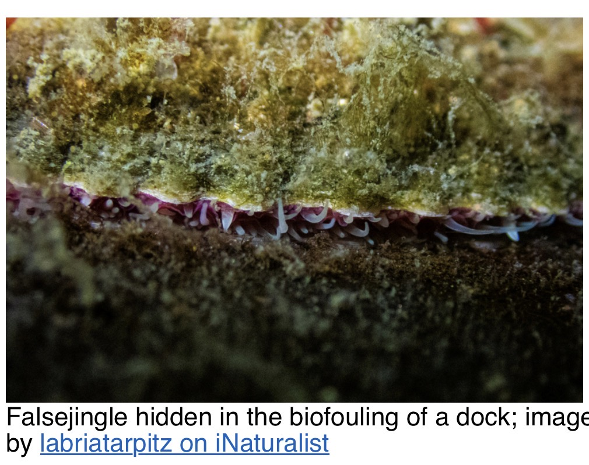

A compact species guide developed from the Aug. 13–19 Naturalist Species Highlight. This animal can be easy to overlook because it often blends into rocky surfaces and biofouling communities.
Quick Guide
Usually 2–4 in; up to ~5 in
Plankton
Rocky/shale reefs; docks and other structures
Commonly 0–100 ft; reported to ~300 ft
Southern California (arguably Baja) to Alaska; Alaska to Japan
Estimated 3–10 years
Not Evaluated
1. What is a falsejingle?

A slender bivalve that is sometimes called a rock oyster, although it is not an oyster. Falsejingles are cementing bivalves: rather than remaining mobile as adults, they permanently attach to a surface.
2. Life Cycle & Settlement

Like other bivalves, falsejingles pass through free-swimming larval stages. In the pediveliger stage the larva has a small muscular foot. The source Field Note describes final settlement using a byssus plug made from a composite of proteins and calcium carbonate. The plug passes through the opening in the lower shell and hardens into a permanent anchor.
3. Filter Feeding & Water Quality

Falsejingles filter water for plankton and suspended nutrients. As with other bivalves, this can remove particulates and excess nutrients and improve water clarity. Bivalves can also accumulate some metals and contaminants, which is why they can be useful indicators of environmental conditions.
4. Ecosystem Services

Although falsejingles do not build dense reefs like mussels or oysters, their shells add hard surfaces used by barnacles, bryozoans, feather-duster worms, coralline algae and other encrusting organisms. Their filtering also links them to nutrient cycling and water clarity.
5. Predators & Food Web
Predators listed in the source include sunflower, ochre, mottled and rainbow stars, giant Pacific octopus and black oystercatchers. A cited Alaska octopus study found falsejingles among commonly consumed bivalves in some giant Pacific octopus middens, illustrating that individuals can specialize even within a generally broad diet.
6. Where to Look at the Aquarium

The source note says there is no dedicated falsejingle exhibit. They can be found by looking carefully in Monterey Bay Habitats, including along the ledge of the large Monterey Bay Habitats exhibit and on hard surfaces in several exhibits.
7. Guide Talking Points
- “Mermaid’s toenails” is a memorable common name for an easily overlooked bivalve.
- Unlike a burrowing clam, the adult permanently cements itself to hard substrate.
- Its shell becomes habitat for other organisms.
- Filter feeding connects a small animal to water clarity, nutrient cycling and the larger food web.
References / Further Reading
Source Field Note references: MolluscaBase; SeaLifeBase; Walla Walla University invertebrate guide; Journal of Conchology; and the Alaska giant Pacific octopus diet study.